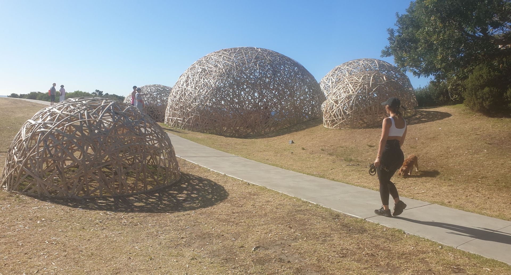
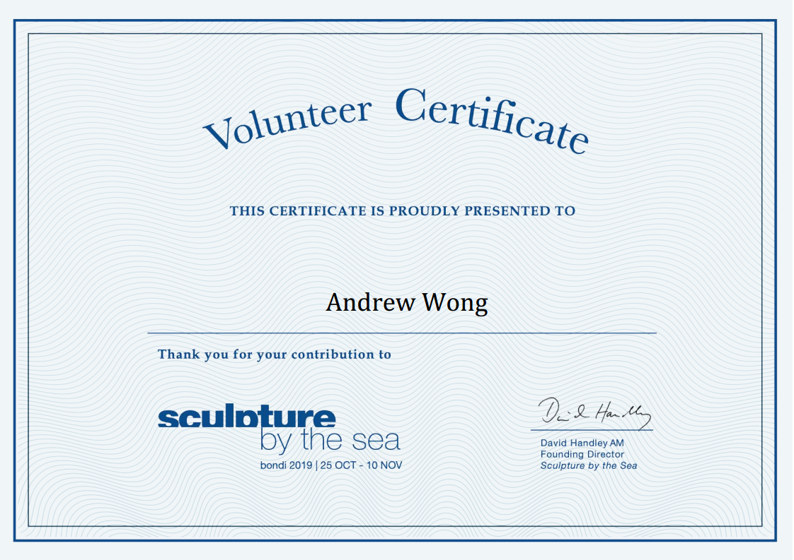

This year I volunteered for Sculpture by the Sea Bondi, making it my second year volunteering here (I volunteered before in 2015!).

Roles
There were a few roles that I was assigned to during my shifts
- Metrics - counting people
- Surveying - asking people to fill in a form
- Patrol - general staff presence
- Data entry - Entering in the voting data
- Catalogue marquees - Selling merchandise and information booklets!
Experience
It's Sculpture by the Sea, NOT SculptureS by the Sea.
Yeah.
People like receipts, except for when they don't.
To manage payments, SxS uses Square Up - payment devices that can be connected to their kiosk iPads.
Consequently, without an EFTPOS terminal, receipts are paperless and have gone digital.
But it’s an inconvenience for a customer holding a child in one hand, and all of their other stuff in the other - to use their third hand to type in their phone number / email address.
… Yeah, exactly.
Things aren't free, but if you&re bougie that's okay.
From my time at the catalogue marquees, the majority of people who will actually purchase something are white people.
The Asian people, especially those whom I will classify as tourist (given the presence of a selfie stick in their hand and/or a down jacket and/or the non-Australian vibe) will ask for a Catalogue Guide but then put it back down after being told it is $7.
As an Asian myself surrounded in an Asian community, I do see this “miser spending” culture.
But at the same time I’m confused because the majority of iPhone 11 Pros I’ve seen have been held by Asians.
What? You can afford a $2000 smartphone, but not spend $7 on a Catalogue Guide that will infinitely increase your enjoyment at SxS? Hm.
Number 23.
From all of the voting forms that I had entered in, it was easy to see that there was a clear winner - Sculpture #23 - being the voted sculpture every 9 in 10 forms.
Viewfinder by Joe Adler.

Trivia: He was a UNSW Alumni!
If he doesn’t win the vote for whatever this voting form was for, I’ll be upset.
My favourite sculpture this year would probably have been Transience by Cave Urban.

Yes, it’s just a glowing ball of bamboo.
BUT IT’S A GLOWING BALL OF BAMBOO HOW COOL WOULD TAKING PHOTOS OF IT BE!
It was really fun volunteering at SxS 2019!
Would I do it again next year? Maybe… If I have time!
And here’s my obligatory mail-merged certificate:
